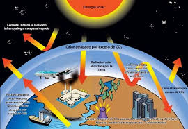

¿Que es el medio ambiente?

El medio ambiente es el conjunto de elementos naturales que rodean a los seres vivos. Incluye el agua, el aire, el suelo, las plantas y los animales.

El cuidado del planeta es responsabilidad de todos. La contaminación ha aumentado desde el siglo XXI21.
